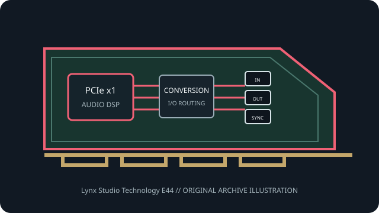

[ PROFESSIONAL AUDIO // PCIe ADD-IN ]
Lynx Studio Technology E44
A professional four-channel analog/digital PCI Express recording interface for studio and broadcast workflows.

MODEL SCOPE: Lynx Studio Technology E44. Four analog and four digital PCIe audio channels in each direction, with Lynx conversion and external sync connections. Confirm PCB/IS revision, accessories, slot wiring and current vendor driver before installation.
Model-specific specifications
| Model-specific SKU | Lynx Studio Technology E44 |
|---|---|
| Host interface / lanes | PCI Express x1 card; confirm bracket clearance and host slot availability. Exact platform support is set by the Lynx driver package. |
| Codec / conversion | Lynx E-series A/D and D/A conversion; manufacturer describes a high-performance conversion system but does not identify the converter IC model numbers on the product page. |
| Analog I/O | Four analog input channels and four analog output channels via the model-specific breakout harness. |
| Digital I/O / protocols | Four channels of digital input and output via AES/EBU-format breakout; word-clock/synchronization connections are accessory/breakout dependent. Confirm included cable and pinout. |
| Resolution / sample rates | Up to 24-bit/192 kHz conversion; channel availability and clock modes depend on the active analog or digital format. |
| Latency / monitoring | Driver-buffered monitoring with Lynx mixer/routing tools; the published product page does not state a universal minimum buffer or round-trip time, so measure the selected host/driver path. |
| Driver / OS compatibility | Lynx driver/control software for supported Windows and macOS platforms. Use the E22/E44 manual and E-series download page to match OS, hardware revision and driver. |
Compatibility & preservation
E44 is a distinct four-analog/four-digital model, not the two-channel E22. The breakout harness, cable pinout and synchronization wiring are part of the working interface; verify them before purchase or service.
- Photograph the card label, PCB revision, rear connectors and included breakout cables before service.
- Retain the exact working driver, firmware, operating-system version, clock and routing configuration.
- Confirm lane wiring, bracket clearance, channel map and external converter/network compatibility; connector fit alone is not a compatibility guarantee.
Manufacturer sources
- Lynx E44 — manufacturer product referenceManufacturer documentation for this model, driver family or revision.
- Lynx E22/E44 — manufacturer user manualManufacturer documentation for this model, driver family or revision.
- Lynx E-series — official drivers and downloadsManufacturer documentation for this model, driver family or revision.